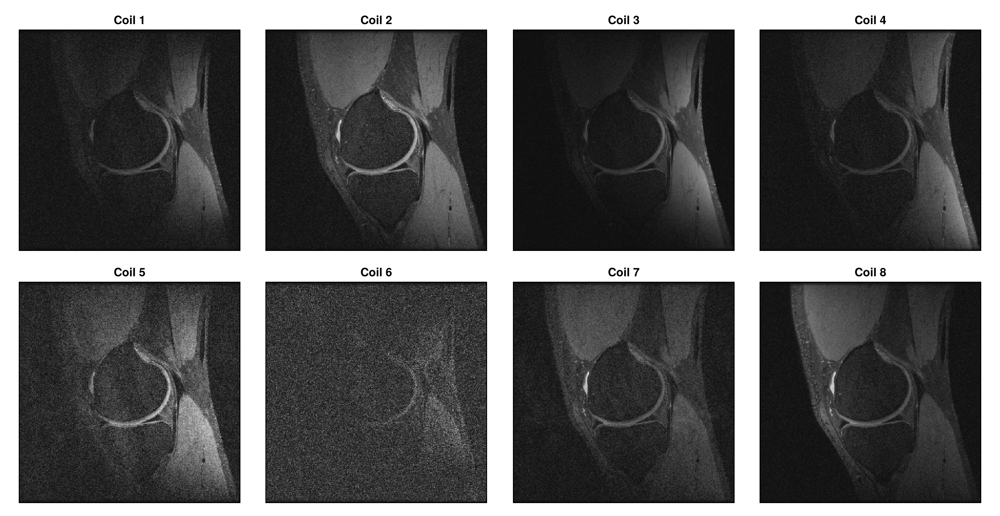
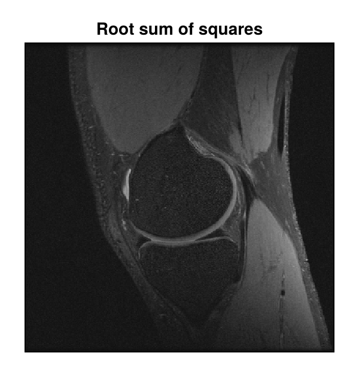

Direct Reconstruction
This tutorial reconstructs an image from fully sampled Cartesian k-space data that was acquired with eight receive coils. It reads the data from a file, reconstructs one image per coil and combines the coil images into a single image.
The data is one slice of a knee dataset from mridata.org, stored in the ISMRMRD format. The file is included in the MRIReco.jl repository. Besides MRIReco, the tutorial needs MRIFiles to read the file and CairoMakie for the plots.
using MRIReco, MRIFiles, CairoMakie
datadir = joinpath(pkgdir(MRIReco), "docs", "src", "examples", "data")
filename = joinpath(datadir, "knee_3dFSE_slice170.h5")Raw Data and Acquisition Data
MRIReco uses two data types for measured data, both defined in MRIBase. A RawAcquisitionData object holds the data as it is stored in the file: the parameters from the file header and a list of profiles, each with the samples of one readout from all coils.
rawData = RawAcquisitionData(ISMRMRDFile(filename))
length(rawData.profiles), size(rawData.profiles[1].data)(320, (320, 8))The file contains 320 profiles, each with 320 samples from 8 coils. For the reconstruction, the profiles are converted into an AcquisitionData object. It sorts the k-space data by contrast, slice and repetition and stores the sampling trajectory:
acqData = AcquisitionData(rawData)
encodingSize(acqData), numChannels(acqData)((320, 320), 8)Reconstructing the Coil Images
The reconstruction parameters are passed in a dictionary. params[:reco] = "direct" selects a direct reconstruction, which for Cartesian data is an inverse fast Fourier transform. For non-Cartesian data, it applies density compensation and the adjoint of a nonuniform fast Fourier transform instead, as in Getting Started.
params = Dict{Symbol, Any}()
params[:reco] = "direct"
params[:reconSize] = (320, 320)
coilImages = reconstruction(acqData, params)
size(coilImages)(320, 320, 1, 1, 8, 1)The reconstruction returns one image per coil. The coils are the fifth of the six dimensions: x, y, z, echoes, coils and repetitions. We plot the images with the following function:
function showimages(images, titles; columns = length(images))
fig = Figure(size = (300 * columns, 310 * cld(length(images), columns)))
for (i, (image, title)) in enumerate(zip(images, titles))
ax = Axis(fig[fldmod1(i, columns)...], title = title,
aspect = DataAspect(), yreversed = true)
heatmap!(ax, image', colormap = :grays)
hidedecorations!(ax)
end
return fig
end
showimages([abs.(coilImages[:, :, 1, 1, c, 1]) for c in 1:8],
["Coil $c" for c in 1:8], columns = 4)
Each coil is most sensitive to the tissue close to it, so the coil images differ in brightness. In this slice, coil 6 contributes mostly noise.
Combining the Coil Images
A common way to combine the coil images is the root sum of squares
\[I(\mathbf{r}) = \sqrt{\sum_{c} |I_c(\mathbf{r})|^2},\]
where $I_c$ is the image of coil $c$. It does not need the coil sensitivities.
combinedImage = sqrt.(sum(abs2, coilImages, dims = 5))
showimages([combinedImage[:, :, 1, 1, 1, 1]], ["Root sum of squares"])
Next Steps
- Iterative Reconstruction shows how to reconstruct undersampled data.
- The API reference describes
reconstructionand the functions for reading files in MRIFiles.
This page was generated using Literate.jl.